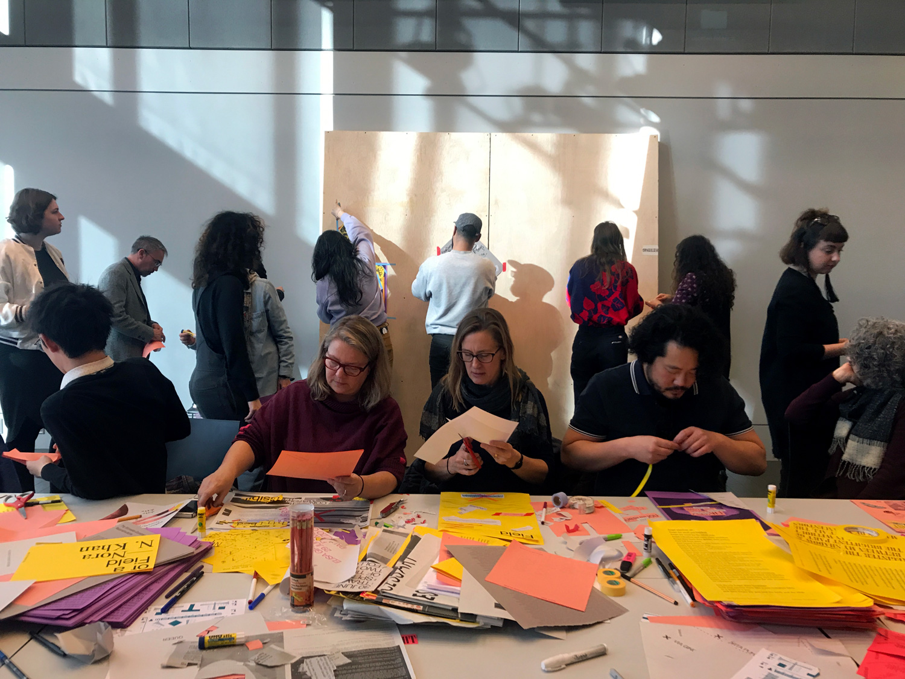
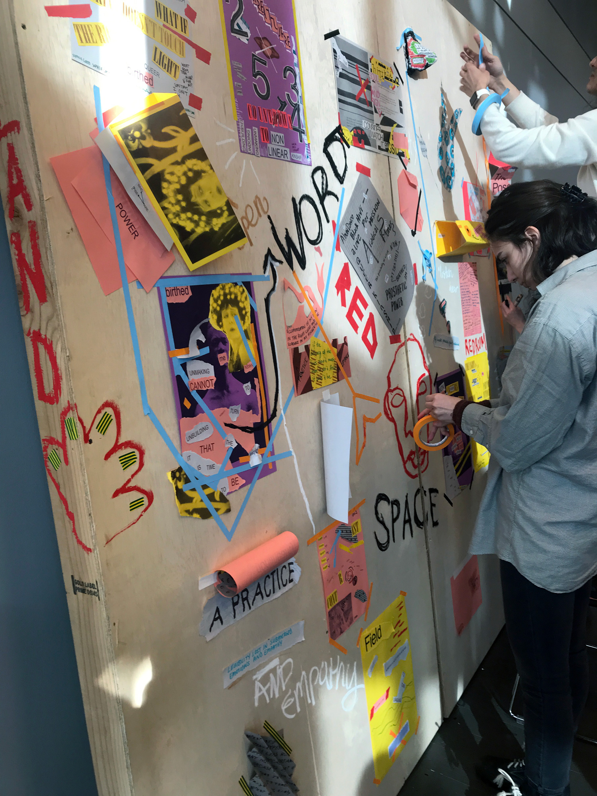
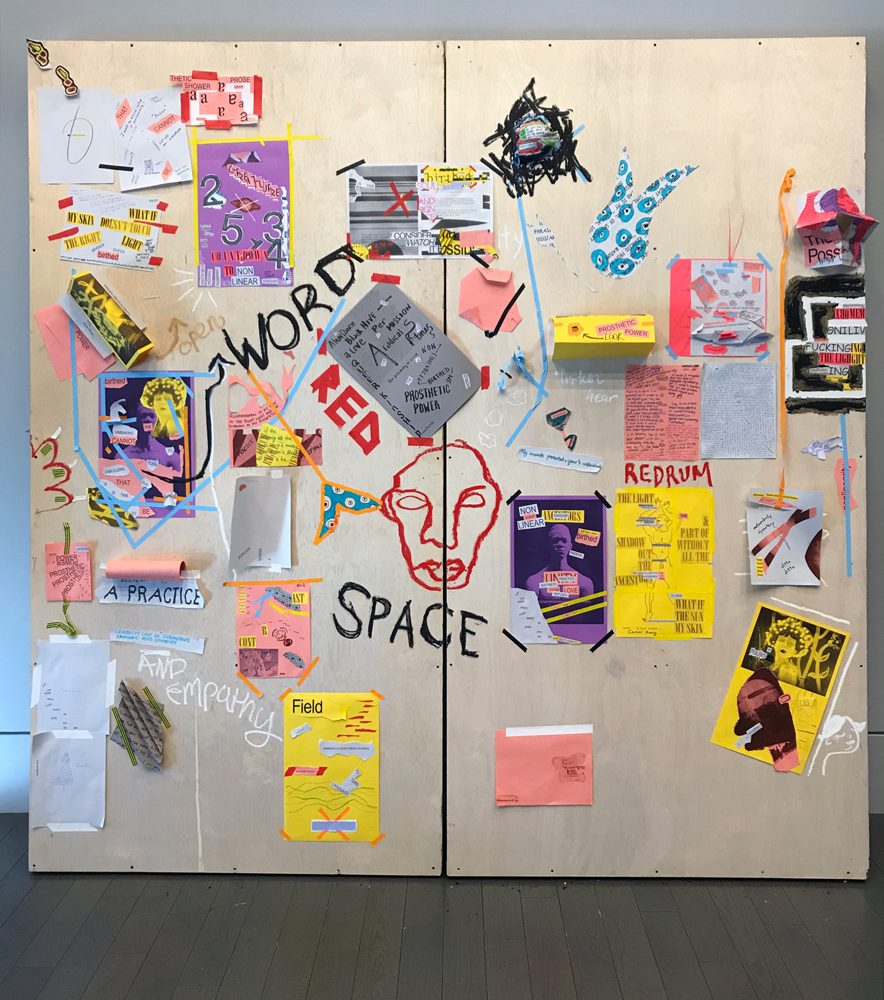
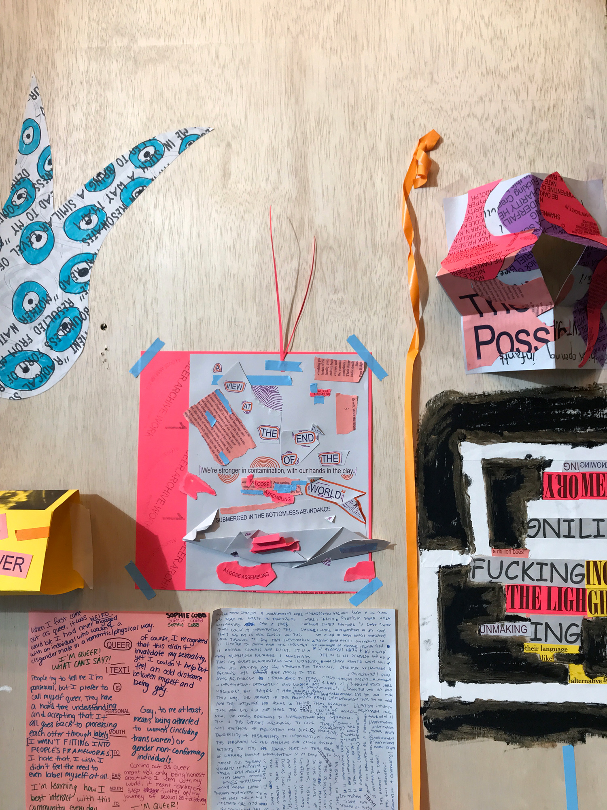
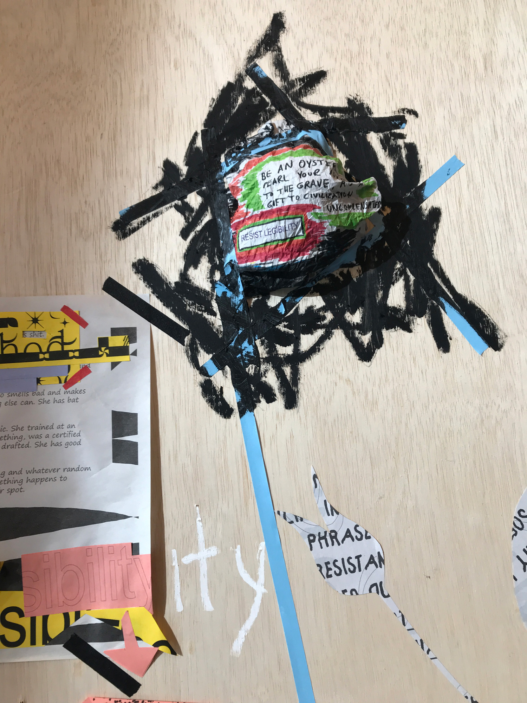
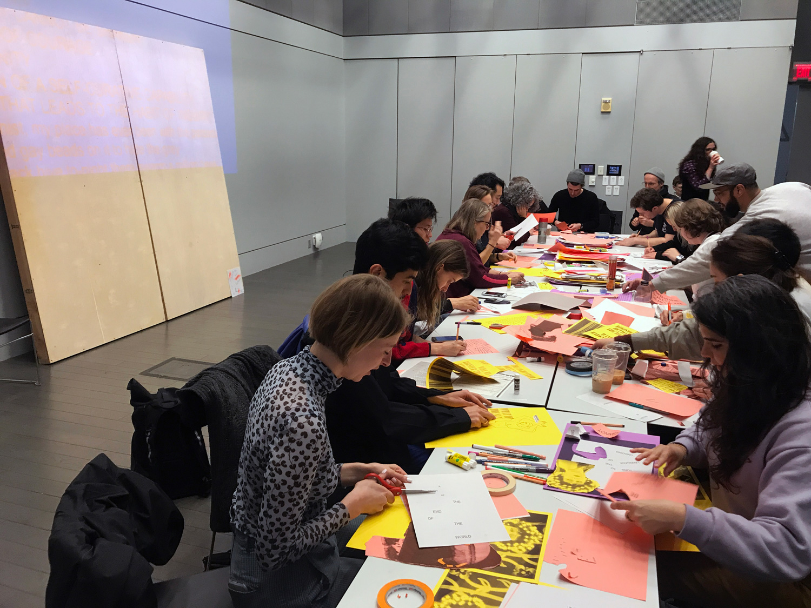
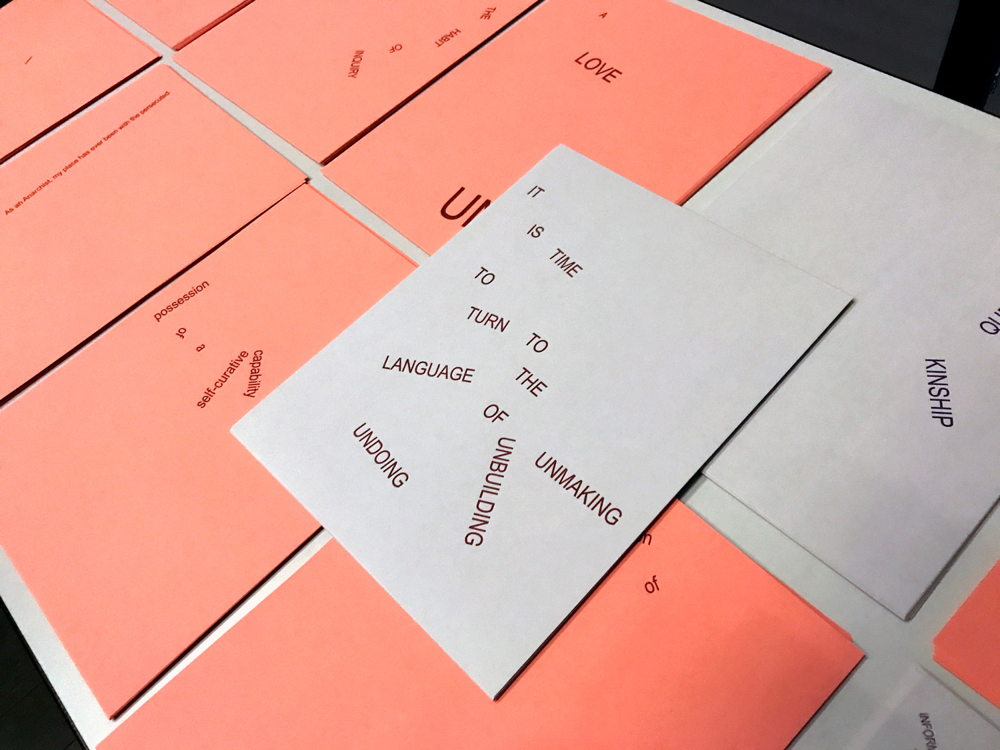
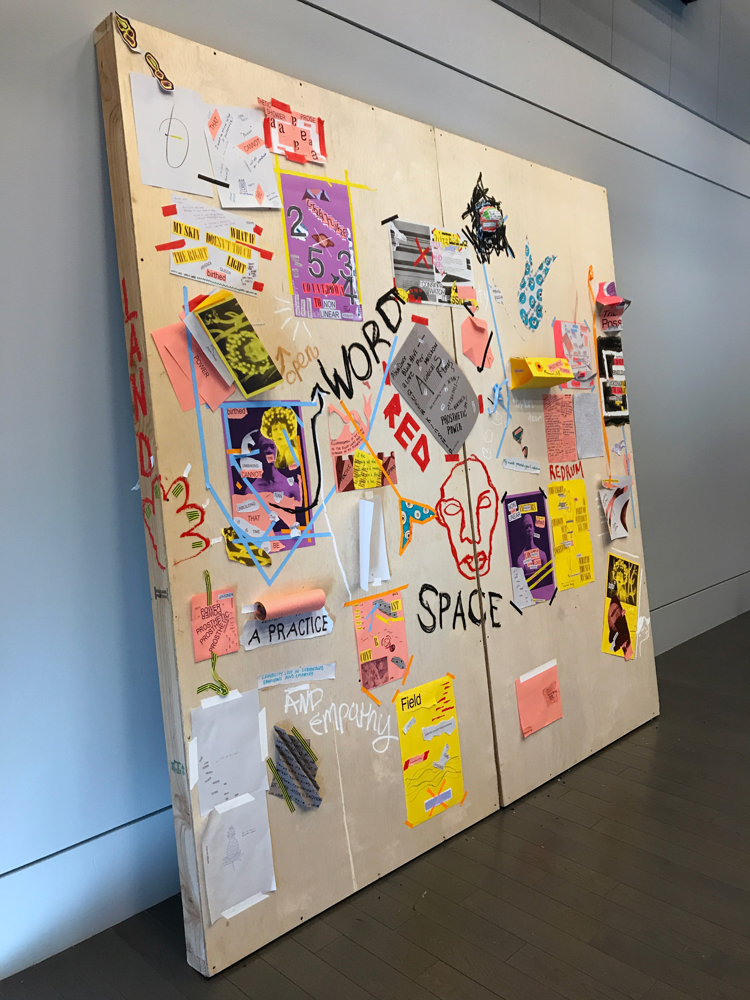
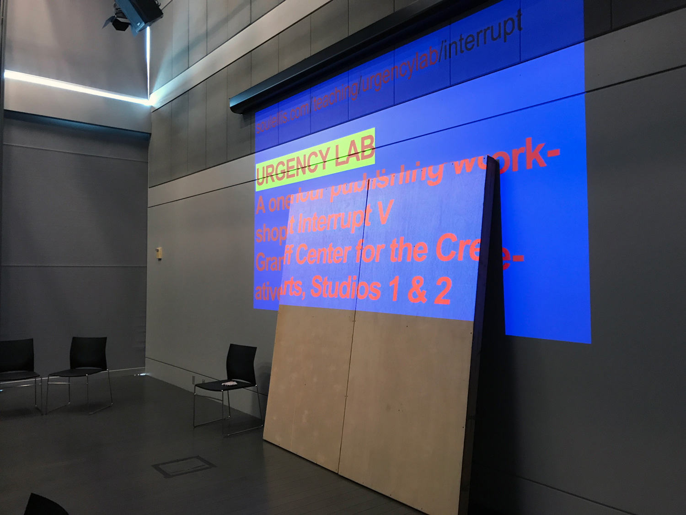

URGENCY LAB Workshop at INTERRUPT V, Brown University (February 8, 2019)
URGENCY LAB was a one-hour workshop held at the INTERRUPT V conference at Granoff Center for the Creative Arts, Brown University, on February 8, 2019. Participants chose risograph prints containing language selected from QUEER.ARCHIVE.WORK 1 and 2, and responded with writing, drawing, and collage for 30 minutes. Piles of misprints, test prints, and scraps from the printing of QUEER.ARCHIVE.WORK 1 were provided, as well as pens, pencils, scissors, and adhesive tape. For the final 15 minutes of the workshop, participants collaboratively installed their work onto two 4 ft x 8 ft wood framed panels. Oil paint sticks were used to annotate and draw directly onto the panels. The panels were visible for the remainder of the conference, and destroyed afterwards. Assisted by Annaka Olsen.






Participants—Jhave, Cam Scott, Andrew K, Elli Mylonas, David Kim, Jen Liese, Lucy Hitchcock, Zach Ngin, Sophie Cobb, Carlos Kong, Theadora Walsh, Bobby Joe Smith, Elaine Lopez, Melike Baskoylu, William Samosir, Sofie Frydman, Madden Alela, Jianni Tien, Everett Epstein, Claire Donato + others

Language by Nora N. Khan, Jack Halberstam, Demian DinéYazhi´, American Artist, Be Oakley, Nicole Killian, Somnath Bhatt, Paul Soulellis, Nate Pyper, shawné michaelain holloway, Unity Press, Sal Randolph, Allison Parrish, Sutton E. Griggs (1872–1933), Elsa Gidlow (1898–1986), Emma Goldman (1869–1940), and Jean Toomer (1894–1967) borrowed from QUEER . ARCHIVE . WORK issues 1 & 2:
📄 That low-down, murky place where we store who we are.
📄 We’re stronger in contamination, with our hands in the clay.
📄 It is time to turn to the language of unmaking, unbuilding, undoing.
📄 TEAR IT ALL DOWN
📄 but do not forget their language
📄 an infected sunset
📄 a practice of refusal
📄 a radical softness
📄 You know I’m your best performer
📄 SUBMERGED IN THE BOTTOMLESS ABUNDANCE
📄 non linear
📄 RESIST LEGIBILITY
📄 compulsory unknowing
📄 Information is the easiest resource to lose
📄 A VIEW AT THE END OF THE WORLD
📄 queer kinship
📄 draw your reflection
📄 permission
📄 What is closeness
📄 nonlinearity birthed me
📄 to all of us who want to finish off life as an orgasm
📄 Queer text is personal: mouth to ear, mouth to body, body to speech.
📄 the undercommons is a kind of break, between locating ourselves and dislocating ourselves
📄 PROSTHETIC POWER
📄 the possibility of a field
📄 HONESTY THAT CANNOT BE SHAKEN
📄 POSSESSION OF COURAGE
📄 A LOVE OF UNITY
📄 POSSESSION OF A SELF-CURATIVE CAPABILITY
📄 CURIOSITY THAT LEADS TO THE HABIT OF INQUIRY
📄 As an Anarchist, my place has ever been with the persecuted.
📄 I have slipped gay beads on it to hide the grey
📄 within this black hive to-night there swarm a million bees
